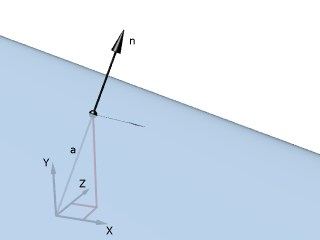
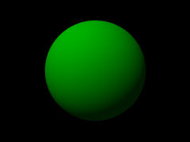
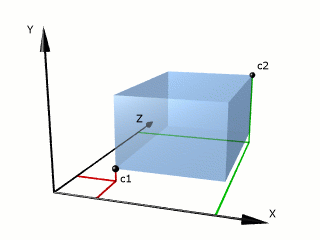
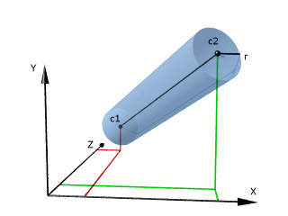
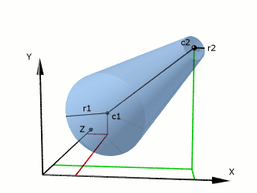
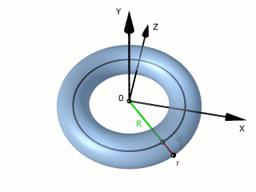
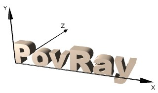

Formation POV #4: Objets
Primitives
Les primitives sont les objets de base à partir desquels, par combinaisons, on va pouvoir obtenir des objets plus complexes.
Les primitives les plus utilisées sont plane, sphere, box, cylinder,
cone, et torus.

plane (plan)
plane {<n>,a}
Un plan est défini par sa normale extérieure n (l’intérieur étant rempli de matière) et par l’abcisse a de ce plan sur l’axe (0,u) où u est n normalisé.
Par exemple, pour faire un plafond à une altitude +10, la normale extérieure sera -y et l’altitude -10.

sphere (sphère)
sphere {<c>,r}
Une sphère est définie par son centre et son rayon.

box (parallélépipède rectangle)
box {<c1>,<c2>}
Un parallélépipède rectangle est défini par les coordonnées de 2 sommets opposés. Ses arêtes sont parallèles aux axes.
Ainsi, si les 2 coins sont <x1,y1,z1> et <x2,y2,z2>, la boîte contiendra tous les points <x,y,z> tels que x est compris entre x1 et x2, y entre y1 et y2 et z entre z1 et z2.

cylinder (cylindre)
cylinder {<c1>,<c2>,r}
Un (tronc de) cylindre est défini par le centre de ses 2 faces et par son rayon.

cone (cône)
cone {<c1>,r1,<c2>,r2}
Un (tronc de) cône est défini par le centre de ses 2 faces et par les rayons de ces faces.

torus (tore)
torus {R,r}
Un tore est défini par son rayon majeur R et son rayon mineur r.
Il est centré en 0 et se situe dans le plan (x0z).

CSG
La CSG (Constructive Solid Geometry) est un ensemble d’opérations permettant
de combiner des objets pour en faire de plus complexes.
Ces opérations sont union, intersection, difference et merge.
Elles utilisent autant d’objets que l’on veut, mais nous en prendrons 3 (2 sur
la figure) pour fixer les idées.
union
union {A B C} contient les points qui sont dans A, dans B, ou dans C.
intersection
intersection {A B C} contient les points qui sont à la fois dans A, B, et C.
difference
difference {A B C} contient les points qui sont dans A, mais pas dans B, ni
dans C.
merge
Lorsque l’on fait l’union d’objets transparents, les parois des objets
constituant l’union sont visibles. Quand ce n’est pas l’effet souhaité, on
remplace union {A B C} par merge {A B C} :
Note : Attention aux surfaces coïncidentes quand vous faites des CSG : difference {box {0,1} box {.5,1}} risque de poser des problèmes ; il faut mieux écrire difference {box {0,1} box {.5,2}}.
Objets avancés
Il existe d’autres objets POV. Tous sont décrits dans la documentation. Voici les plus utilisés :
height_field
height_field {_type_ "_fichier_"}
Un height_field prend un fichier image de type gif, tga, pot, png, pgm, ppm
ou sys, et en fait une surface dont la hauteur de chaque point correspond à la
couleur de l’image.
Cette surface est inscrite dans une boîte de coins <0,0,0> et <1,1,1>. Il sera
souvent nécessaire de la redimensionner à l’aide d’un scale.
Les height_field sont très pratiques pour faire des terrains vallonnés.
La méthode la plus simple pour faire un height_field est de créer avec un
programme de dessin une image en 256 niveaux de gris, le blanc correspondant à
l’altitude maximale et le noir à l’altitude minimale.
Un petit dessin valant parfois mieux qu’un long discours, voici un exemple :
L’image de gauche a été créée à partir d’un programme de dessin (Gimp) puis sauvée au format gif sous le nom map.gif. Dans l’image de droite, le height_field est obtenu par :
height_field {gif "map.gif"
pigment {rgb <1,.9,.8>}
finish {ambient .2 diffuse 1 specular .2 roughness .005}
}
text
On peut utiliser les height_fields pour dessiner du texte, mais pour cela on
peut aussi utiliser la fonction text :
text {ttf "_fichier.ttf_" "_texte_" _épaisseur_,_décalage_}
On spécifie le fichier police ttf (truetype) à utiliser, la chaîne de
caractères dont on veut faire un objet, l’épaisseur des caractères et un
décalage, généralement <0,0,0>, à rajouter au décalage normal entre chaque
caractère.
La taille des caractères dépend de la police ; il font généralement entre .5
et .75 unités de haut.
Les caractères sont situés dans le plan (x0y), la ligne de base étant l’axe X,
et suivant Z ils vont de 0 à p où p est la profondeur.

Dans l’image ci-dessus le fichier ariblk.ttf se trouve dans le même répertoire que le fichier .pov et l’objet texte est obtenu par :
text {ttf "ariblk.ttf" "PovRay" .4,0
pigment {rgb <1,.9,.8>}
finish {ambient .2 diffuse 1 specular .5 roughness .01}
}